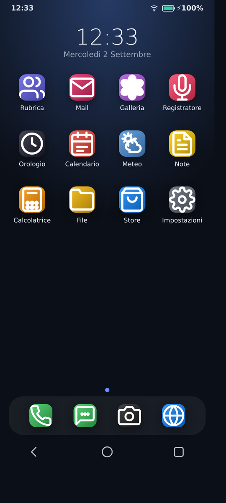
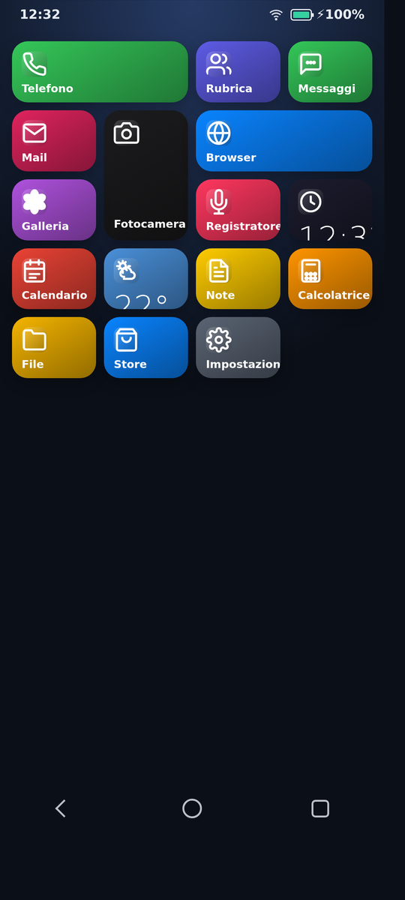
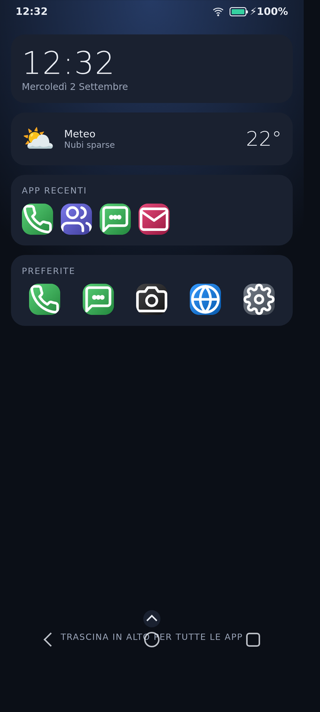
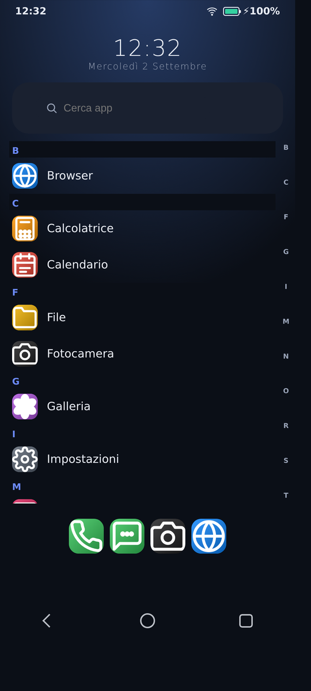
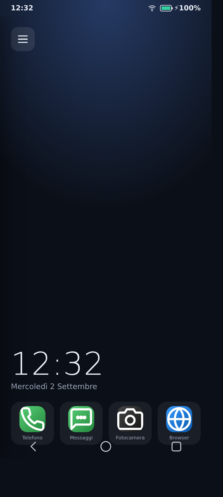

NovaOS è un sistema operativo per smartphone nello spirito di Firefox OS e KaiOS: Android gestisce l'essenziale — kernel, driver, radio, sensori — mentre tutta l'esperienza d'uso, dalla home al blocco schermo alle app, è scritta in HTML, CSS e JavaScript. Open source, senza account e senza servizi cloud obbligatori.


L'idea
Perché l'interfaccia di un telefono — home, app, notifiche — è fatta di elementi che il web disegna benissimo. Così NovaOS concentra ogni sforzo dove serve davvero: pixel, interazioni e personalizzazione, senza toccare il cuore hardware che Android già gestisce.
Home, blocco schermo, tendina rapida, notifiche e app sono HTML/CSS/JS: funzionano in un browser, in una WebView o in un motore GeckoView, con lo stesso codice.
Kernel, driver, radio e sensori del telefono restano quelli originali. NovaOS viaggia sopra come launcher di sistema: il dispositivo continua a essere un Android, solo con un'altra faccia.
La home non è scolpita nella pietra: griglia, drawer, dashboard, tessere, elenco, radiale, cover flow o il layout di un tema importato — cambiano aspetto e funzioni, le app restano.
Nessun account richiesto, nessun cloud imposto. I dati vivono sul dispositivo (o dove scegli tu): meteo e mail usano i servizi che indichi, il resto funziona anche in assenza di rete.
La home
La schermata principale non è un'unica griglia fissa: NovaOS offre otto stili di home, selezionabili da Impostazioni → Display → «Home · launcher». Ognuno porta il proprio orologio e la propria logica — tessere, widget, elenchi — ma le app sono sempre le stesse.
Riquadri colorati a tutta larghezza

Widget, orologio e app recenti

Elenco alfabetico con scorrimento rapido

Menu laterale a scomparsa con quick action
E ancora: la Griglia classica a pagine con dock, la Lista con ricerca, il Radiale con le app in orbita, il Cover flow a grandi schede — oppure un layout personalizzato importato da un tema. La griglia di base è editabile: icone a posizionamento libero (slot 4×4), trascinamento tra pagine, cartelle e swipe.
Vuoi una home davvero tua? Con il Theme Studio, un editor
visuale che gira nel browser, puoi costruire un tema .novatheme completo — launcher,
colori, icone, suoni e blocchi — e importarlo su NovaOS in un secondo.
Scopri il Theme Studio
Demo live
Le app
Tutte le app nascono dal progetto (repository shell/) e funzionano offline
nell'APK; molte si appoggiano a dati reali solo se glieli consenti tu.
Dialer stile Android: preferiti, recenti con ricerca, tastierino con suggerimenti contatti, cronologia richiamabile e schermata di chiamata in corso con muto, vivavoce e tastierino DTMF.
Contatti con nome, telefono ed email; chiama, scrivi SMS o apri la mail con un tocco dal contatto.
Conversazioni dai contatti, orari per messaggio, risposte contestuali, avatar ed eliminazione.
Client email reale SMTP/IMAP con selettore di provider (Gmail, Outlook, Libero, Aruba, PEC…), cartelle, ricerca e allegati. Le password sono cifrate nell'Android Keystore.
Schede multiple con anteprime, incognito, cronologia e preferiti condivisi con la home, modalità lettura, trova nella pagina, download, aggiunta di un sito alla home e traduzione delle pagine in 64 lingue. Sul dispositivo apre i siti in una WebView nativa a schermo intero, con vista desktop automatica per WhatsApp e Telegram Web.
Anteprima live, scatto salvato in Galleria e import da file.
Stile Google Foto: scheda foto, ricerca, raccolte creabili, ricordi per mese, preferiti, cestino con ripristino (30 giorni) ed editor con filtri.
Previsioni reali a 7 giorni via open-meteo: geocoding della città, percepita, umidità e vento.
Multi-nota con ricerca, cartelle, colori, note fissate e formattazione markdown con anteprima.
Calcolo di espressioni con operatori.
Orologio, sveglie, cronometro e fusi orari del mondo con copertura globale.
Vista mese, eventi per giorno, aggiunta ed eliminazione, navigazione tra i mesi.
Gestore reale: cartelle e file di testo creabili, rinominabili e spostabili, con ricerca, riepilogo spazio e cartelle intelligenti per Immagini e Note.
Installa web app di terze parti da URL, con scelta di icona, anteprima e modifica di nome, URL, icona e colore.
Rete, display, suoni, sicurezza (PIN), app, batteria, archiviazione, accessibilità e aggiornamenti di sistema OTA dalla stessa schermata.
Funzioni di sistema trasversali: blocco schermo con PIN o swipe, tendina rapida stile Android, tema chiaro/scuro, luminosità adattiva, icone personalizzabili, notifiche heads-up, suonerie selezionabili, ricerca nelle impostazioni, backup dati in JSON e aggiornamento OTA automatico.
Dentro il sistema
NovaOS non sostituisce Android: ci vive sopra. L'hardware e i driver restano quelli del costruttore; ciò che cambia è tutto ciò che si vede e si tocca.
Tutto il «sistema» visibile: boot con logo, blocco schermo, home, app, notifiche, tendina.
È HTML/CSS/JS e vive nella cartella shell/: si sviluppa e si prova in un browser.
Una piccola app (WebView) che apre la shell a schermo intero e la espone come Home.
Il bridge NovaNative collega la web app a chiamate, SMS, batteria, sensori
e alla posta reale via JavaMail.
Kernel, driver, radio e sensori del telefono. Sulla ROM definitiva NovaOS è innestato come
app di sistema (priv-app) con whitelist di privilegi: si flasha la sola partizione
system, lasciando vendor e boot originali.
Tutto si può provare subito, dal browser all'emulatore Android, prima di toccare un telefono vero:
shell/
con un server locale: home, app e launcher funzionano identici.
Chiamate e sensori passano in modalità simulata.setup-emulator.sh crea
l'AVD; make-emulator-rom.sh lo trasforma in un dispositivo NovaOS senza
ricompilare AOSP.build-apk.sh, senza Gradle e senza IDE.Stato e prossimi passi
Prototipo completo e funzionante, testato su emulatore Android (AOSP 14): 15 app
operative, home di sistema, telefono predefinito e toggle privilegiati verificati. Le release
con l'APK sono su GitHub; la shell si aggiorna da sola via OTA leggendo
shell/version.json.
Aprendo una pagina scritta in un'altra lingua compare sotto la barra degli indirizzi una riga che propone la traduzione: un tocco e la pagina è in italiano, un altro e torna com'era. La lingua si sceglie da un elenco di 64 con il campo di ricerca, e si può dire a un sito di non essere mai tradotto. La lingua della pagina si legge da quello che la pagina dichiara, non indovinandola dal testo, e la richiesta parte dal browser e non dalla pagina: niente esce dal telefono prima che l'utente lo chieda, e la pagina tradotta non vede il canale. Limite dichiarato: il servizio è gratuito e non ha un contratto, quindi le richieste vanno due alla volta con una pausa, e se blocca il browser lo dice invece di restare in attesa. Aggiornamento completo (APK).
Cinque voci che nel menu non c'erano: «Mostra modalità lettura» (il testo in colonna, senza il contorno del sito, in una scheda a parte), «Installa» e «Crea scorciatoia» (una pagina diventa un'icona nella home, con l'icona vera del sito e la conferma per i siti in chiaro), «Elimina cronologia» (con la casella per cancellare anche cookie, dati e cache) e «Impostazioni del sito» (fotocamera, microfono, posizione, pop-up, sito desktop, cookie e spazio occupato). L'elenco dei download è disegnato dal browser invece di passare all'app di sistema, così la via d'uscita non dipende da un'app che può non esserci; e cronologia e preferiti hanno la faccia di una schermata di browser, non di una finestra di sistema. Aggiornamento completo (APK).
La stella dei preferiti salvava ma non cambiava aspetto; con NovaOS in chiaro nella scheda in incognito non si leggeva niente (testi e icone seguivano il tema chiaro su una barra scura per forza); e il pulsante per uscire dallo schermo intero era un cerchio vuoto, perché il segno dentro era un carattere che non tutti i sistemi hanno. Aggiornamento completo (APK).
Il browser del dispositivo ha una faccia nuova: pagina iniziale con ricerca, siti più visitati e preferiti come riquadri, schede multiple con anteprime, scheda in incognito, menu a icone vettoriali ancorato al suo pulsante. «Trova nella pagina» dice quante volte il testo compare — il conteggio lo dà la pagina, perché il contatore interno della vista incorporata riporta numeri sbagliati, e meglio nessun numero che un numero falso. Preferiti e cronologia sono gli stessi della shell. Aggiornamento completo (APK).
La griglia di Foto è divisa per giorno e ogni giorno riparte da zero: il numero scritto sulla cella era la posizione dentro il giorno, mentre il visualizzatore lo leggeva come posizione nell'elenco completo. Dal secondo giorno in poi si apriva quindi l'elemento sbagliato — la seconda foto di un giorno apriva la seconda foto della galleria. Riguardava anche la ricerca e i video. Ora la cella ricava la sua posizione dall'elenco completo: si apre sempre l'elemento toccato. Aggiornamento della sola interfaccia via OTA.
La shell
non interroga più window.NovaNative in nessun punto: i 28 comandi verso l'hardware
passano da NovaBridge.cmd(), che risponde true solo se il comando è
arrivato al nativo. Chiude il punto più insidioso della migrazione a GeckoView e sistema quattro
chiamate mail che non avevano guardia. Comportamento invariato: aggiornamento della sola
interfaccia via OTA.
Eliminando tutte le raccolte di esempio (Paesaggi, Città, Natura) non ricompaiono più: il seme iniziale ora si applica solo a chi non ha mai salvato una lista, e una lista vuota viene rispettata. Aggiornamento della sola interfaccia via OTA.
La shell parla
all'hardware attraverso un unico punto di contatto (js/bridge.js) con
contratto esplicito dei 53 metodi, esiti tri-stato e push unificati. Comportamento invariato:
è la predisposizione alla migrazione del motore. Aggiornamento della sola interfaccia via OTA.
UI di chiamata ridisegnata,
InCallService abilitato, doppio filtro ACTION_DIAL per il ruolo dialer su Android 10+, link
tel: che precompilano il compositore, recupero della chiamata al boot.
NovaOS innestato come priv-app con whitelist, launcher e setup di serie disattivati, Home e telefono predefinito impostati. L'emulatore si avvia direttamente in NovaOS.
Installazione
via GSI flashando la sola partizione system: kernel e driver originali restano
intatti. Richiede un dispositivo di prova.
Migrazione del
motore (Gradle + GeckoSession al posto della WebView), contenuta a livello di contenitore: la
shell non cambia — è già predisposta, parla all'hardware solo attraverso
js/bridge.js. Verificate sull'emulatore le prime due fasi: la shell boota sotto
Gecko senza modifiche e il ponte verso il nativo regge nei due versi, comandi in salita
ed eventi in discesa. Il percorso di build cambia (build-apk.sh non regge le
dipendenze di GeckoView): il piano è in
MIGRAZIONE-GECKOVIEW.md.
NovaOS come UI di sistema con app firmata con chiave di piattaforma, whitelist e SELinux.
Provalo
Dalla finestra del browser a un telefono che diventa NovaOS.
Scarica il progetto, servi la cartella shell/ e apri la pagina: l'intero
sistema gira in una scheda del browser, con telefonia e sensori in modalità simulata.
python3 -m http.server 8091
Installa l'APK, premi Home e scegli NovaOS. Puoi anche impostarlo come telefono predefinito e usare il bridge nativo per chiamate, SMS e posta reale.
Ultima releaseDa un'immagine di sistema AOSP/LineageOS (GSI) o dall'emulatore, NovaOS diventa l'interfaccia che vedi all'accensione: una ROM senza ricompilare il mondo.
Guida alla ROMEsplora il codice, leggi la guida, prova la shell. NovaOS è open source e si costruisce un pezzo alla volta, dal browser fino alla ROM.
Apri il repository